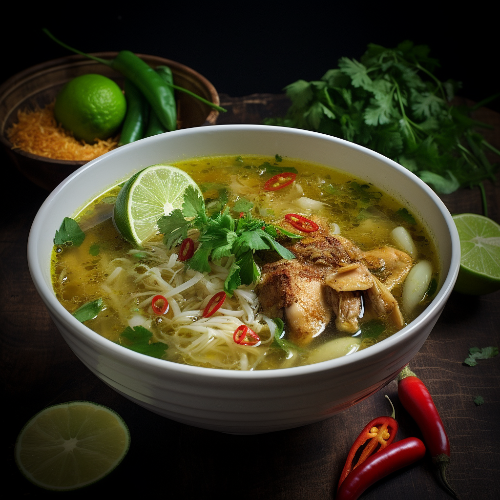

Soto Serenity
Find comfort in the warm embrace of soto, a nourishing Indonesian soup known for its aromatic blend of herbs and spices. Tender chicken or beef is simmered in a fragrant broth infused with lemongrass, galangal, turmeric, and lime leaves, creating a harmonious symphony of flavors. The soup is complemented with rice noodles, bean sprouts, and a sprinkle of fried shallots, offering a soothing and heartwarming dish that holds a special place in the hearts of Indonesians.